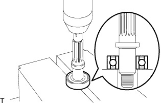
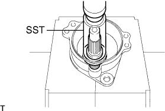
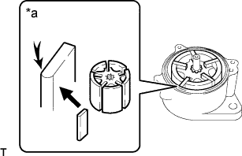

ВАКУУМНЫЙ НАСОС (для моделей с 1KD-FTV) > ПОВТОРНАЯ СБОРКА |
| 1. УСТАНОВИТЕ ПОДШИПНИК ВАКУУМНОГО НАСОСА |
|  |
С помощью пресса запрессуйте новый подшипник на вал.
| 2. УСТАНОВИТЕ ВАЛ ВАКУУМНОГО НАСОСА |
|  |
С помощью SST и пресса запрессуйте вал в кожух.
С помощью съемника стопорных колец установите новое пружинное стопорное кольцо.
| 3. УСТАНОВИТЕ ШЕСТЕРНЮ ВАКУУМНОГО НАСОСА |
Закрепите сегментную шпонку и шестерню на насосе с помощью контргайки шестерни.
Зажмите шестерню в тисках.
Затяните контргайку шестерни.
| 4. УСТАНОВИТЕ ЛОПАСТЬ ВАКУУМНОГО НАСОСА |
|  |
Нанесите моторное масло на ротор и установите ротор в кожух.
Установите 5 новых лопастей закругленными концами наружу.
| *a | Закругленный конец |
| 5. УСТАНОВИТЕ ТОРЦЕВУЮ КРЫШКУ ВАКУУМНОГО НАСОСА |
Зажмите насос в тисках.
Установите 2 новых уплотнительных кольца.
Установите торцевую крышку и наживите 3 болта.
Вбейте 2 стопорных штифта с помощью молотка и бородка с тонким цилиндрическим концом 5 мм.
Затяните 3 болта.
| 6. УСТАНОВИТЕ ОБРАТНЫЙ КЛАПАН В СБОРЕ |
Установите новую прокладку и обратный клапан.
Закрепите 2 новых прокладки и штуцер с помощью болта-штуцера.